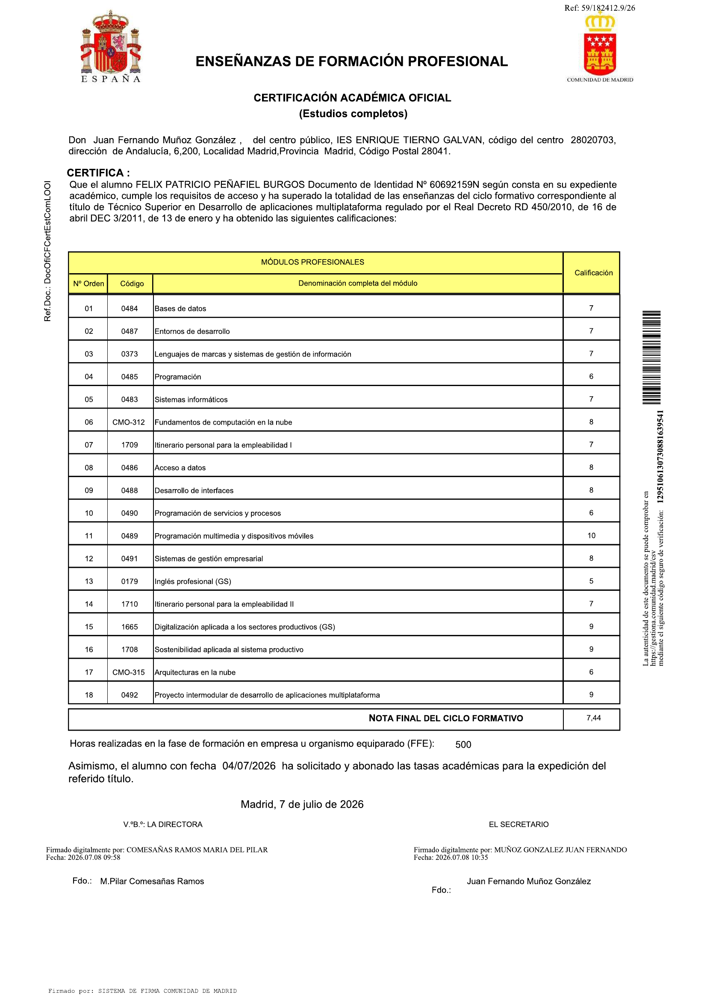

Hola soy Felix Patricio
Soy Felix Patricio, desarrollador de software especializado en el diseño y construcción de soluciones digitales que aportan valor real a personas y organizaciones. Mi trabajo se centra en el desarrollo backend con Java y Spring Boot, donde diseño APIs REST seguras y escalables, con autenticación y control de roles mediante Spring Security y persistencia de datos con Hibernate/JPA sobre bases de datos relacionales como PostgreSQL y MySQL.
En el ámbito móvil desarrollo aplicaciones Android con Kotlin y Retrofit, integrando interfaces modernas e intuitivas con servicios backend robustos. Trabajo con Git para el control de versiones y con Docker para la contenedorización y el despliegue, buscando siempre que el software sea mantenible, reproducible y fácil de evolucionar.
Mi proyecto más destacado es Amani Psicología, una plataforma integral para la gestión de pacientes, psicólogos y citas, con autenticación, roles diferenciados y flujos pensados para digitalizar la operativa diaria de un centro de psicología. Este proyecto refleja mi interés por la transformación digital en sectores donde la tecnología puede simplificar procesos, mejorar la organización y ofrecer una mejor experiencia a los usuarios.
Entiendo la digitalización como un proceso que va más allá de programar: implica comprender las necesidades reales de cada negocio, traducirlas en soluciones técnicas sólidas y garantizar la seguridad y la calidad en cada capa del sistema. Me mueve el aprendizaje continuo y busco incorporarme a proyectos reales en los que aportar mis conocimientos, trabajar en equipo y seguir creciendo profesionalmente.